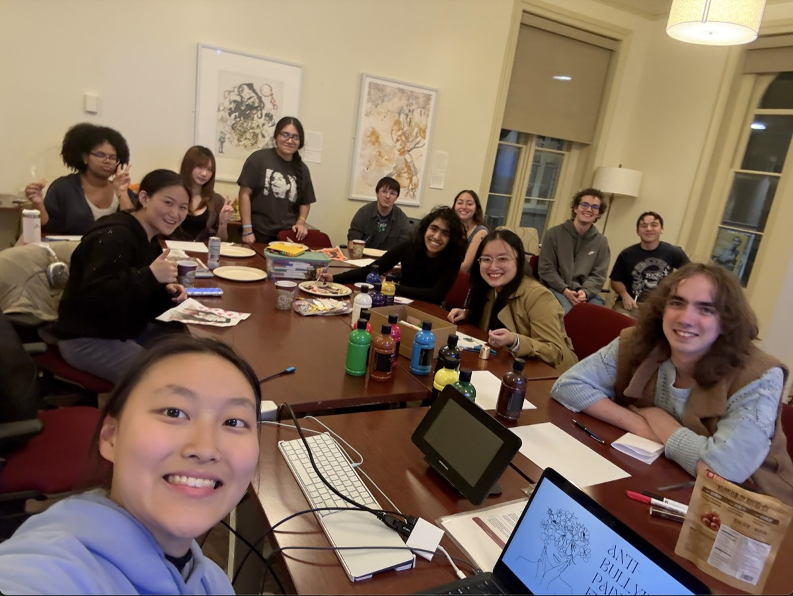
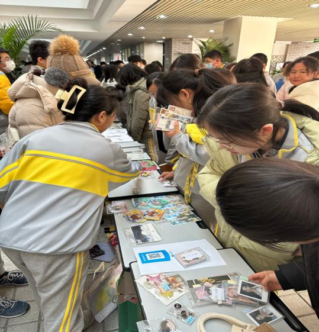
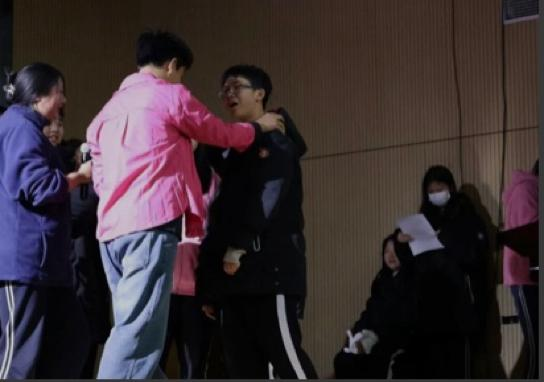
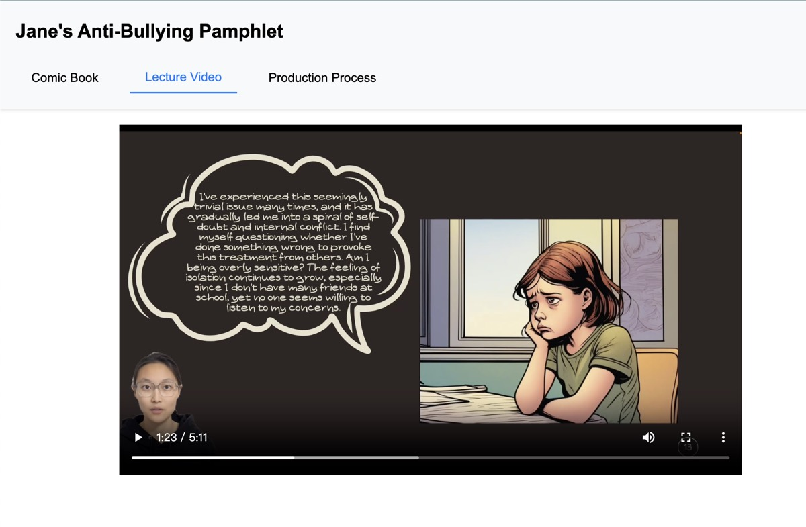

Student Union Against Bullying
A student-run nonprofit, registered in Massachusetts. 2,000+ members in four countries.
Everyone deserves to feel safe and respected at school.
“I was bullied in middle school, and in three years I made only one friend.”
That was me. I now lead SUAB, a community where anyone affected by bullying can be heard and find support. When we speak up, we speak for everyone still suffering in silence.
Branches
- SUAB
- The founding U.S. chapter, registered in Massachusetts.WeChat: SUAB, ID KENTSUAB
- SUAB Beijing
- A coalition of a dozen-plus schools across Beijing.WeChat: SUAB Hutong Guardian, ID gh_6172ea08af2c
What we've done
Vassar Anti-Bullying Week
A campus-wide week sponsored by the Engaged Pluralism Office. 300+ participants; 100+ people left messages of support on the Empathy Wall.

Paint for Care
Two hours of open painting and free snacks during finals week, on anti-bullying themes.
Anti-Bullying Debate
Hosted with the International Department of the High School Affiliated to Peking University. One motion: are bullies truly guilty, and how should that guilt be defined?

Charity Sales
Sales at schools across Beijing raised over 20,000 yuan for anti-bullying work and support for students who were bullied.

Workshops and Drama
Interactive workshops and plays on campus that teach prevention through storytelling and role-play.
Pink Day
Pink across campus as a visible sign of solidarity and kindness.

Digital pamphlet
A website where my digital avatar walks visitors through anti-bullying resources. Visit it.
Join us
Have a story to share, or want to help? Write to janezzz@stanford.edu.